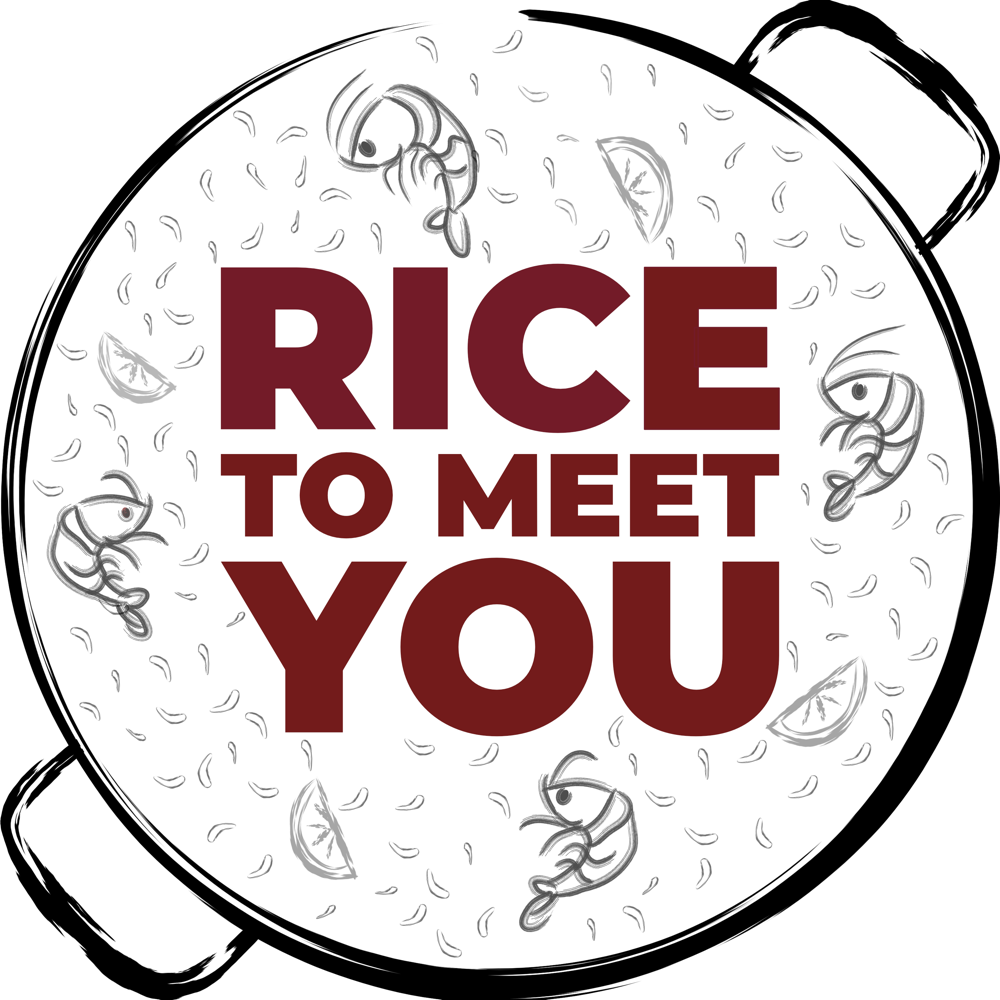
RICE TO MEET YOU
ricetomeetyou.fun
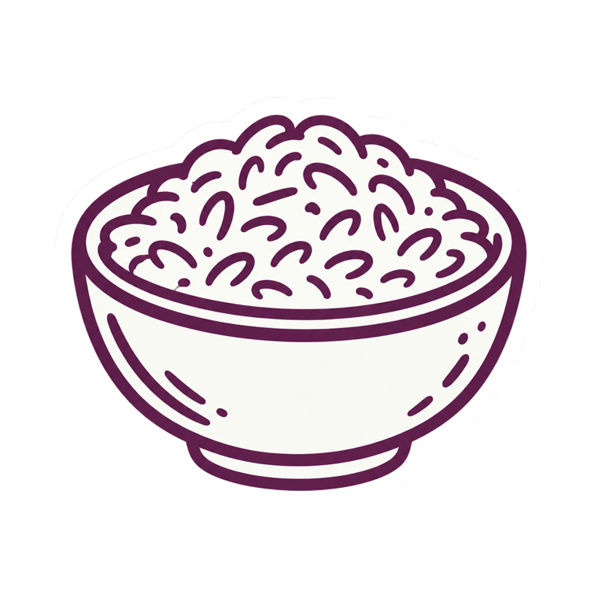
Carta · Arroces
El arroz
no espera.
Aquí tampoco.
Paella de marisco, arroz de pato, arroz de carrillera, arroz de verduras.
Hechos al momento, con caldo propio y azafrán D.O.P.
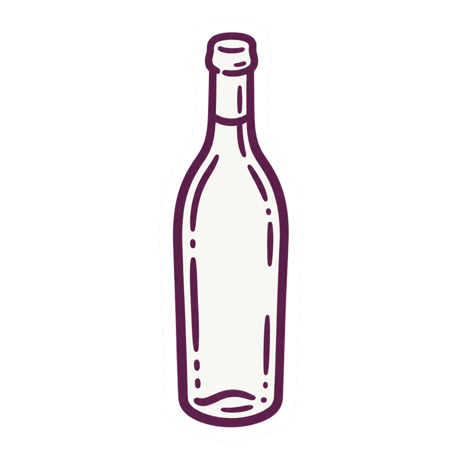
Carta · Tapas
Las tapas que abren el apetito.
(Y las que lo cierran.)
Carta · Tortillas
Tortilla con más versiones
de las que crees.
—Clásica
—Con sobrasada y miel
—Con anchoas del Cantábrico
—Con alcachofa y queso curado
—Con jamón y queso curado
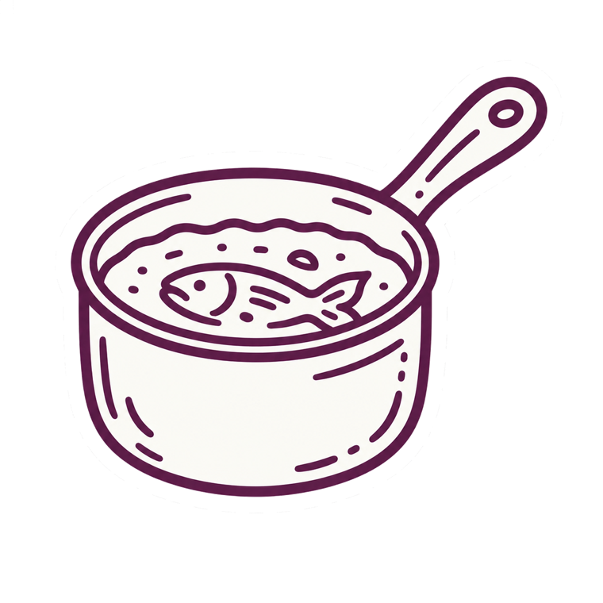
Materia prima
ARROZ ALBUFERA
D.O. VALENCIA.
AZAFRÁN D.O.P. LA MANCHA.
CALDO PROPIO.
Hay cosas que es mejor no improvisar.
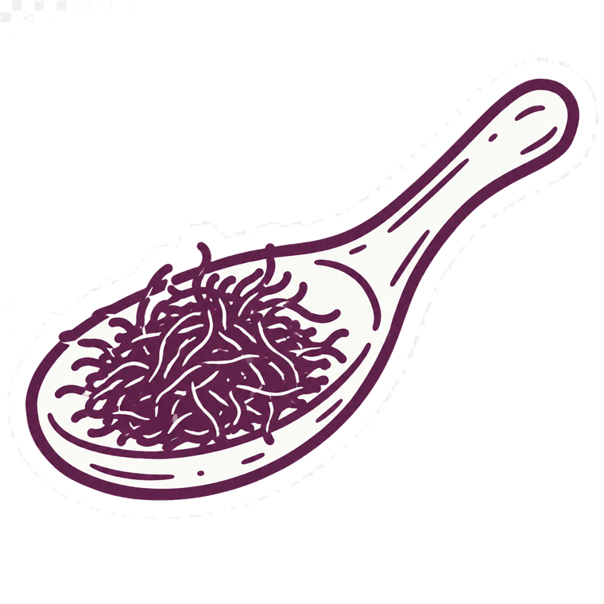
Postres
Una crema catalana
para terminar bien.
Porque los postres también dicen algo de quien cocina.
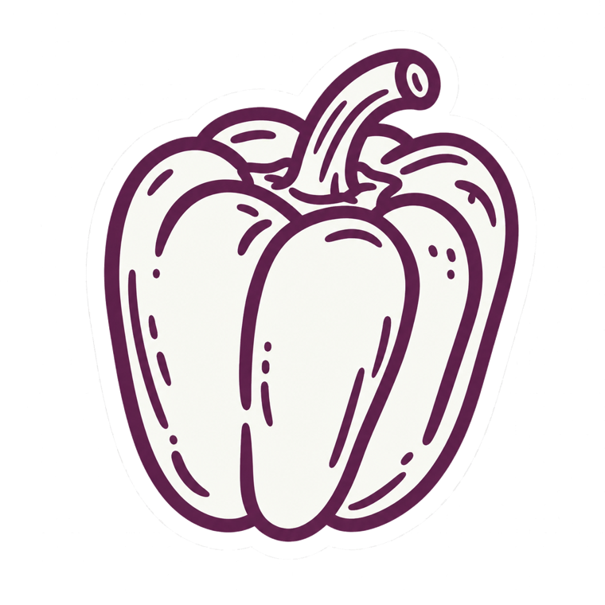
Cocina · Para todos
Hay paella
para todos.
Vegetariana, sin gluten, sin marisco.
Dilo al reservar y la cocina se adapta. Sin problema.
¿Cuándo fue la última vez
que hiciste algo
con tus manos?
Taller de paella. Sin experiencia previa. Sin presión.
Con resultado garantizado.
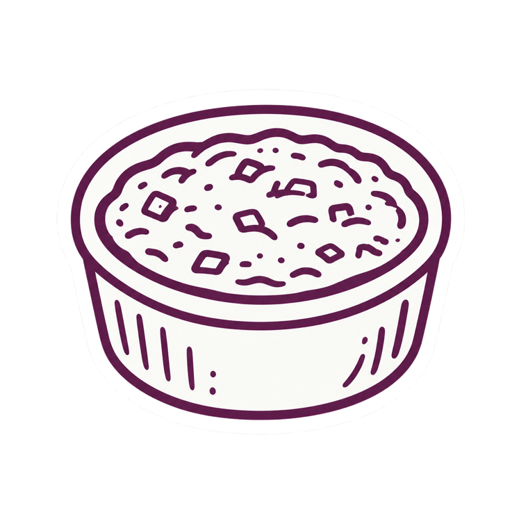
Taller de paella
No hace falta
saber cocinar.
Solo hace falta querer hacerlo.
Todo preparado. Ingredientes listos. Nosotros te guiamos.
El taller, paso a paso
Tres pasos. Nada más.
01Sofrito. Lo primero, y lo que más manda.
02Caldo. El nuestro, hecho aquí.
03Arroz. A partir de ahí, manda él.
Lo haces tú. Nosotros estamos al lado.
HAZ
PAELLA
MAKE FRIENDS
RICETOMEETYOU.FUN
Taller de paella
En dos horas y media
haces una paella de verdad.
Y te la comes.
Con cava de bienvenida, pan, crema catalana y bebida incluida.
Horario · Taller
MIÉ — DOM
18
·
20
·
22H
En español y en inglés
ricetomeetyou.fun
Nuevo horario · Taller
TAMBIÉN
A LAS 13 H.
Taller de paella al mediodía, de miércoles a domingo.
69 €·2,5 h·12 personas
ricetomeetyou.fun
Taller
En español
y en inglés.
Grupos privados hasta 25 personas.
Cumpleaños, aniversarios, equipos, familias que no se ven nunca.
Reserva
Reserva tu sitio.
Doce personas por sesión. Cuando se llena, se llena.
ricetomeetyou.fun
El mejor
recuerdo
de Barcelona
no está en una tienda
de souvenirs.
Reserva un taller con nosotros →
Vale regalo
Regala
un taller.
69 €·2,5 h·cada uno con su paella
Mejor que otra cosa que no van a usar.
Team building
Hay cosas
que no pasan
en una sala
de reuniones.
Team building con paella para grupos de 6 a 25 personas.
Tres formatos
TEAM FLOW
PAELLA CHALLENGE
EXPERIENCE DINNER
Un equipo que recuerda haber hecho algo juntos de verdad.
Tu equipo
merece algo mejor.
Que una cena en un restaurante cualquiera.
RICE TO MEET YOU
Team building
Aquí no hay
dinámicas
forzadas.
La vida, como la paella.
MEJOR
NO
REMOVER
RICETOMEETYOU.FUN
Lo mejor no es el plato.
Es lo que pasa
mientras lo hacéis.
Rice to Meet You
La paella
no se come sola.
Nunca fue para uno.
RTMY es el sitio donde pasan cosas entre personas.
Restaurante
DE 13 A 23,
SIN PARAR.
Para el vermut, para comer, para las tapas de las seis,
para la copa de después.
RTMY está abierto cuando tú decides que empieza el plan.
Google Reviews
0
★★★★★
reseñas de 5 estrellas en Google.
Lo dicen ellos, no nosotros.
Vuelve pronto.
Trae a alguien.
Cuéntaselo.
ricetomeetyou.fun
Carrer de la Lleialtat 16, Barcelona
Taller de paella·
Team building·
Restaurante·
El Raval